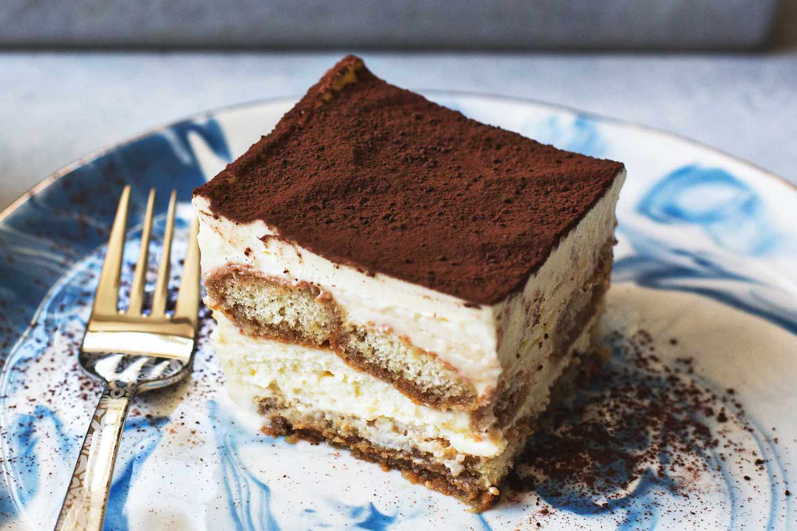

Tiramisu
home

Description
Tiramisu is a classic Italian no-bake dessert that literally translates to "pick me up" or "cheer me up". It is renowned for its delicate balance of rich, creamy mascarpone and bold, espresso-soaked ladyfingers, all topped with a signature dusting of cocoa powder.
Ingredients
- Ladyfingers (Savoiardi): 24–30 biscuits
- Mascarpone Cheese: 500g
- Eggs: 4–6 large eggs
- Sugar: ¾ cup (approx. 150g)
- Cocoa Powder: 1 tsp
- Coffee: 1.5–2 cups
- Optional Alcohol: 2–4 tablespoons of Marsala wine
- Optional Heavy Cream: 1–1.5 cups
Steps
- Prepare the Coffee Base: Brew your strong coffee or espresso. Stir in the optional alcohol and set it aside in a shallow dish to cool completely.
- Whisk the Yolks: In a large bowl, beat the egg yolks with about half of the sugar until the mixture is pale, thick, and creamy (about 5 minutes).
- Incorporate Mascarpone: Gently fold or whisk the mascarpone cheese into the egg yolk mixture until smooth and free of lumps. Be careful not to overmix, as mascarpone can curdle.
- Whip the Whites (or Cream): In a separate clean bowl, whisk the egg whites (with a pinch of salt) or heavy cream until stiff peaks form. Gradually add the remaining sugar during this process.
- Fold Together: Gently fold the whipped whites (or cream) into the mascarpone-yolk mixture. Use a spatula and a "bottom-to-top" motion to keep the cream light and airy
- Layer the Biscuits: Quickly dip each ladyfinger into the cooled coffee for about 1–2 seconds per side. They should be moist but not soggy. Line the bottom of a 9x13 inch (or similar) dish with a single layer of these biscuits.
- Add Cream & Repeat: Spread half of the mascarpone cream evenly over the ladyfingers. Add a second layer of coffee-dipped ladyfingers on top, followed by the remaining cream.
- Chill & Set: Cover the dish and refrigerate for at least 4–6 hours, though overnight is highly recommended to allow the biscuits to soften and the flavors to fully develop.
- Finish: Just before serving, generously dust the top with unsweetened cocoa powder using a fine-mesh sieve.